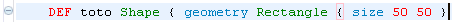
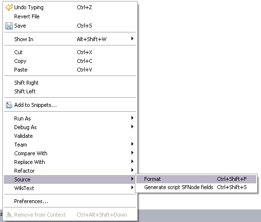
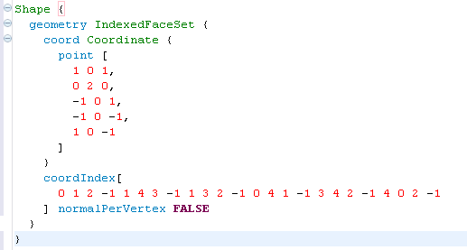

When the plug-in is installed, these files are represented by the following icon:

This document aims to describe the Mobile Widgets SDK VRML Editor Plug-in.
This plug-in, once integrated in the Eclipse platform, provides a complete VRML editor.
The following functionalities are embedded in this plug-in:
The functionalities provided by the editor apply to " .wrl " files in " src " folder. They are detailed below.
Each file with the " .wrl " extension can be open with the VRML Editor plug-in.
When the plug-in is installed, these files are represented by the following icon:
A " .wrl " file can be created with the creation wizard included in the VRML Editor plug-in.

In top menu bar, 2 possibilities:
In top menu bar, 2 possibilities:
" New - Select a wizard " dialog box is opened.
Select " VRML File " under " General " folder.
Select " Next > " button to continue.

" New VRML File - Create a new VRML File " dialog box is opened.
Choose a location by entering or Selecting the " parent folder " and " src " folder.
Enter a name for this file in " File name: " textfield. (the extension does not need to be specified)
Select " Finish " button to open the new file " .wrl ".

The newly created file (here " new.wrl ") is displayed and contains a VRML header.
Note:
A " .wrl " file can also be created with a simple File creation wizard.
But in that case, the extension " .wrl " will have to be specified in " File name: " textfield.
The header will not be present.

" New - Select a wizard " dialog box is opened.
Select " File " under " General " folder.
Select " Next > " button to continue.
" New VRML File - Create a new VRML File " dialog box is opened.
Choose a location by entering or Selecting the " parent folder " and " src " folder.
Enter a name with the extension " .wrl " for this file in " File name: " textfield.
Select " Finish " button to open the new file " .wrl ".
The newly created file (here " empty.wrl ") is displayed without contain a VRML header.
However, it is a valid " .wrl " file that has all the features of the VRML Editor.
The VRML editor automatically provides a syntax highlighting, as shown below:

Select a VRML node name or a JavaScript function name.
Then

The code blocks delimited by braces {} are signalled in the margin by a minus (-) sign:

When one of these minus signs is clicked, the corresponding block is collapsed. A plus (+) sign appears in the margin, allowing expanding the block:

The areas delimited by braces {} or square brackets [] can be automatically selected by double-clicking at the beginning of the block (just after the first bracket) or at the end (just before the closing bracket), as shown below:
When the cursor is positioned just after a brace or a square bracket (opening or closing), the associated bracket is highlighted with a little pink rectangle:

When a node name or a function name is selected, all its occurrences in the current .wrl file are highlighted, and marks in the margin indicate where these occurrences are located:

The line automatic formatting can be configured in the VRML Editor preferences (Window > Preferences > VRML Editor). By default, the option Line auto formatting when typing } activated is not checked. If you activate it, when a closing brace } is typed, the current line is automatically formatted. For example, the following line is typed:

A closing brace is added at the end of the line, and it is automatically formatted:

Code formatting can also be applied to blocks of code, by selecting the code to format and using the context menu (right click, Source > Format), or using the associated key binding (CTRL+SHIFT+F). If no code is selected, the whole document is formatted. For example, this is the block of code to format:
This code is selected, and the formatting action is called by the context menu:

The block of code is now well-formatted (indentation is correct, there are carriage returns after each bracket...):

The VRML and JavaScript comment characters are different, but there is only one key binding to comment/uncomment code: CTRL+SHIFT+C.
The comment character in VRML language is #. To comment some code, select one or several lines, or place the cursor in the line you want to comment:
When the code is selected, press simultaneously the CTRL+SHIFT+C keys: the selected lines are commented.

To uncomment the code, the keys combination is also CTRL+SHIFT+C:
The comment character in JavaScript is //. To comment or uncomment a JavaScipt code block, press CTRL+SHIFT+C.

When the Eclipse spell checking is activated (Window > Preferences > General > Editors > Text Editors > Spelling), the errors present in comments (VRML and JavaScript) are underlined:
If the error is fixed, the editor is updated and the word is no longer underlined:
The VRML Editor provides an outline view which shows the Protos contained in the file, and all the VRML objects defined in these Protos, as well as the JavaScript functions. When the VRML nodes or the JavaScript functions are not explicitly defined in a Proto, they are displayed under a Proto object whose name is the same as the file name.

This outline view allows reaching easily the Protos, the VRML objects and the JavaScript functions, just by clicking on their names. By default, the items (Protos, node definitions and JavaScript functions) are displayed by order of appearance in the file. They can be sorted alphabetically with the "a z" button on the outline menu bar.

Items can also be hidden by type (VRML node definition or JavaScript function), by selecting the appropriate button in the outline menu bar:

The VRML Editor provides completion for VRML objects and for JavaScript functions. It is called by pressing simultaneously the CTRL+SPACE keys.
In a VRML object declaration, the completion can be called on order to display the arguments of the object:
When a VRML object is defined in the current wrl file (by using DEF), completion is activated for this object. To use completion, write the object's name (SCRIPT in our example), followed by a dot. A list of available propositions is displayed.

The functions available in JavaScript can be displayed and selected the same way, with an additional help (in the yellow box):

Moreover, completion proposals also appear when no word has been typed, within a function:

When this list is displayed, typing one or several letters will reduce it to the appropriate entries:
When the completion is called within a script but outside JavaScript functions, a template function is created with a generic name:

The VRML Editor provides some code and comments auto-insertion functionalities.
The word Script followed by the Enter key is recognized by the editor, and the following code block is inserted:

Comments are inserted automatically in three cases:


The VRML Editor offers the possibility to automatically generate the "field SFNode" line for each node present in the document. This action can be called by pressing simultaneously the CTRL+SHIFT+S keys, or through the contextual menu Source > Generate Script SFNode fields. This option is very practical in cases of huge VRML files, because it avoids the user to search through the file which nodes exist and which ones have not yet been used in scripts.
In this document, the MY_TIMER node has not been used in the SCRIPT script:
Access the contextual menu:
A wizard containing only the nodes that have not been used in scripts is displayed. Use the checkboxes to indicate which SFNode fields have to be generated:
Click Finish, and the selected nodes are added at the beginning of the script:
The field name is the node name in lowercase. Underscores are removed, and the letter that follows them is in uppercase.
By default, the character used for auto-indentation (when the text is formatted) is two spaces. This character can be modified in the Preferences menu (Window > Preferences > VRML Editor):
The VRML Editor Preferences page also allows enabling or disabling the line auto formatting.